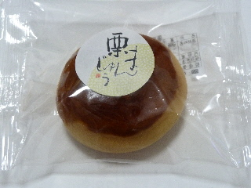
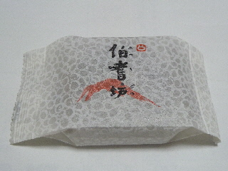
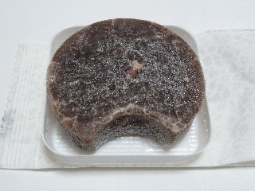
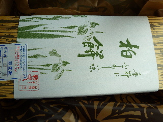
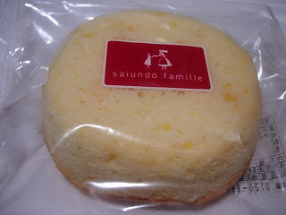

彩雲堂の栗まんじゅう
2014/09/16
王道な感じの栗まんじゅうです。

味も王道な感じでした。
餡に栗の粒々が入ってて美味しかったです。
飽きのこないいいお味でした。
島根県出雲市姫原町272
2014/09/16
王道な感じの栗まんじゅうです。

味も王道な感じでした。
餡に栗の粒々が入ってて美味しかったです。
飽きのこないいいお味でした。
2014/09/09
私は小豆のお菓子が好きです。

なので、こうゆうのも好きです。

砂糖と小豆の甘さはいいなー。
和菓子はなんか落ち着くなー。
甘いので、ちょっとずつ食べるのが好きです。
2011/05/04
中身の見えない入れ物がいいですね。手土産に丁度いいです。（そのぶん値段が787円と高目です。）

5個セットで販売していました。
お餅少な目でこしあん多目なので、やわらかい柏餅でした。
和菓子っぽい感じがしました。
彩雲堂の洋菓子は何種類かあるんですが、オレンジシフォンは他の商品と比べるとっちょっとお値段が安かったと思ったので、そんなに期待してなかったんですが、予想以上に美味しかったです。

シフォンケーキらしい食感もあるし、オレンジの爽やかな甘さも丁度良く、「普通にケーキみたい」って思いました。
良い商品ですね。ちょっとした手土産なんかにいいかも？
2008/12/21
小さい紙のカップに入ったヨーグルトケーキです。
エアーが入ってて、舌触りは軽いんですが、しっかり甘いヨーグルトケーキでした。
軽い感じが焼き菓子っぽいかなって思いました。
見た目、焦げ目とかがないので「焼きヨーグルト」って感じがしなかったんですが、食べてみてなんとなく納得しました。
2006/6/18
彩雲堂の出雲店に行ったんですけど、ここのオムレットは種類がいろいろあって、チョコ、苺、ブルーベリー、栗味がありました。たっぷりのクリームでデコレーションがしてあって派手になってるので、個人的にはちょっとオムレットって感じではなかったです。見た目は綺麗でいいんですけどね。
和菓子屋さんってことで、和菓子屋さんらしい感じのクリームで、濃い味のカスタードクリームが沢山入ってました。大きさも結構あるので、食べごたえがバッチリありました。
チョコ味はカスタードクリーム+チョコクリームだし、栗味もカスタードクリーム+栗のクリームなので、しっかり甘口仕様でした。甘すぎはちょっとって人は苺かブルーベリーを選んだ方が無難ですね。
2005/4/23
今日は出雲市姫原町の彩雲堂でおやきを買って食べたんですけど、味が大判焼きみたいな感じにしてあってとても美味しかったです。
出雲の彩雲堂は移転オープン２周年記念で、今日はおしるこが無料でいただけたので得した気分でした。